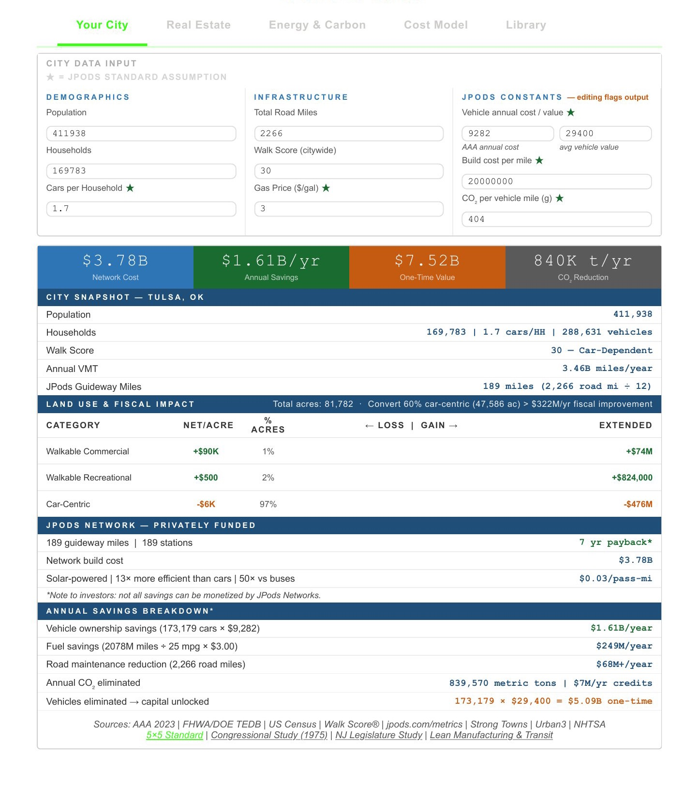

Type a city name. Personalize Transit looks up the public data, applies the JPods standard assumptions, and shows what a solar Middle Mile network would cost to build and what it would save.
Population, households and cars come from the US Census; road miles, Walk Score and gas price from public sources.
Every input is visible. Click Edit to change any value you know better.
Build cost, annual savings, one-time value and CO₂, with the land use and fiscal impact.
Download the AI prompts for real estate, energy and cost, and run them in the AI of your choice.
Assumptions marked ★ are the JPods standard. Change one and the report is stamped Modified assumptions — not JPods standard, so every number stays honest about where it came from.
$3.78 billion to build. $1.61 billion a year saved.

Census data filled the inputs; the JPods standard assumptions did the rest.
The report sizes the network by a rule of thumb: road miles ÷ 12 = 189 guideway miles. MeshMobility replaces the rule with a drawn network: 349 stations and 267.8 miles of guideway.